pacman::p_load(ggiraph, plotly,
patchwork, DT, tidyverse,
readxl, gifski, gapminder,
plotly, gganimate,networkD3,
ggtext, grid, ggnewscale,shadowtext,
corrplot, ggstatsplot, tidyverse)Take-home Exercise 4
Project Component
Uni-Vraiant and Time series Analysis
Multi-variant Analysis
Geospatial Analysis
Modeling
Time Series Prediction
Time Series Clustering
Time Serious Network Anlysis
For this take home exercise, will cover
Data Preparation
Please refer to https://isss608-24jan-group1.netlify.app/prototype/data_preparation/data_preparation for complete data preparation process contributed by all members of the team, and the final dataset is shared among all members.
Loading R packages
Importing Data
Code
bmi <- read_csv("data/countries_with_complete_data.csv")to take a quick look of available columns/data
Code
head(bmi)# A tibble: 6 × 15
...1 country year currency_code bmi_localprice bmi_usd_price
<dbl> <chr> <dbl> <chr> <dbl> <dbl>
1 1 Argentina 2002 ARS 2.5 0.799
2 2 Australia 2002 AUD 3 1.61
3 3 Brazil 2002 BRL 3.6 1.54
4 4 United Kingdom 2002 GBP 1.99 2.89
5 5 Canada 2002 CAD 3.33 2.12
6 6 Chile 2002 CLP 1400 2.14
# ℹ 9 more variables: bmi_gdpadj_price <dbl>, dollar_ex <dbl>,
# GDP_bigmac <dbl>, export_usd <dbl>, import_usd <dbl>, GDP <dbl>,
# gdp_per_capita <dbl>, gdp_per_employed <dbl>, inflation <dbl>Multivariate analysis
package
below package are used:
….
Code
colnames(bmi) [1] "...1" "country" "year" "currency_code"
[5] "bmi_localprice" "bmi_usd_price" "bmi_gdpadj_price" "dollar_ex"
[9] "GDP_bigmac" "export_usd" "import_usd" "GDP"
[13] "gdp_per_capita" "gdp_per_employed" "inflation" Correlation Analysis
Investigate how different numerical variables relate to each other. For instance, you could look at the correlation between bmi_usd_price and GDP_per_capita or between bmi_gdpadj_price and inflation. This can be done using Pearson or Spearman correlation coefficients depending on the data distribution.
Code
# Pearson's correlation
correlation_result <- cor(bmi$bmi_usd_price, bmi$gdp_per_capita, method = "pearson")
print(correlation_result)[1] 0.7235314Code
# Spearman's correlation
correlation_result <- cor(bmi$bmi_usd_price, bmi$gdp_per_capita, method = "spearman")
print(correlation_result)[1] 0.6864934Code
ggstatsplot::ggcorrmat(
data = bmi,
cor.vars = 2:11)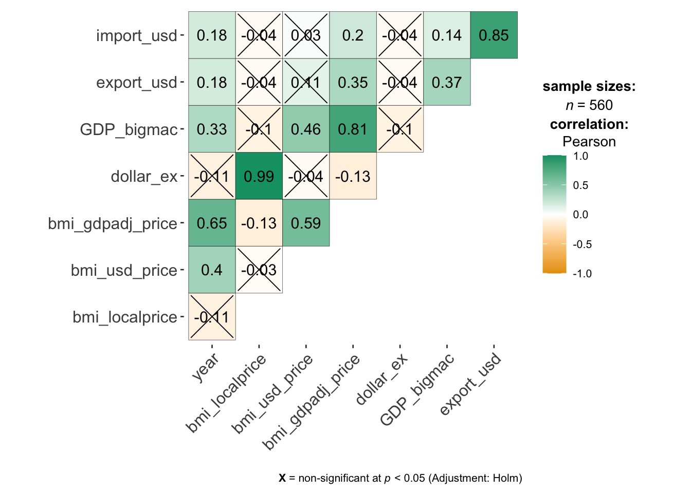
filter specific year to understand the correlation
2000
Code
filtered_data <- bmi %>%
filter(year == 2005)Code
ggstatsplot::ggcorrmat(
data = filtered_data,
cor.vars = 1:11)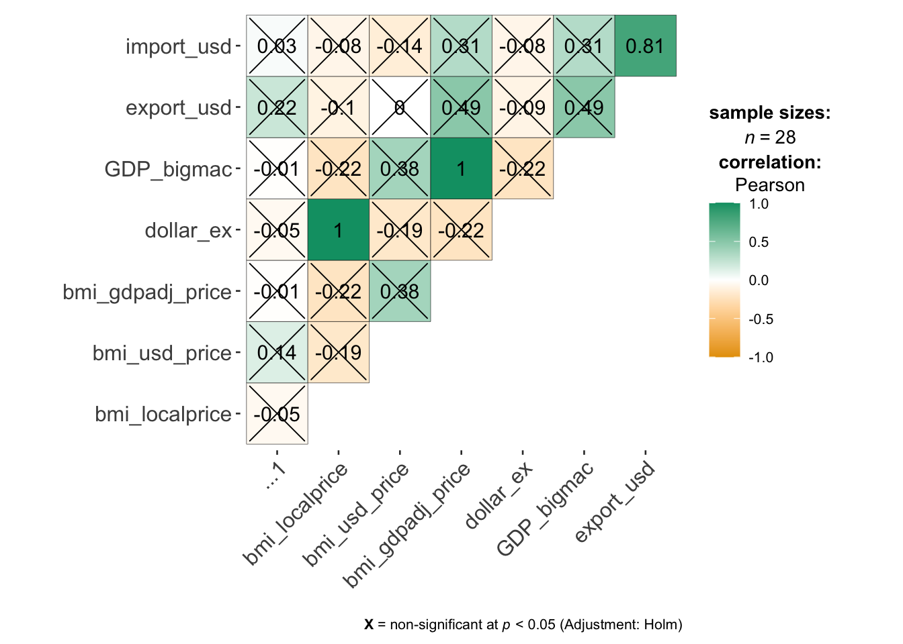
2000
Code
filtered_data <- bmi %>%
filter(year == 2005)Code
ggstatsplot::ggcorrmat(
data = filtered_data,
cor.vars = 1:11)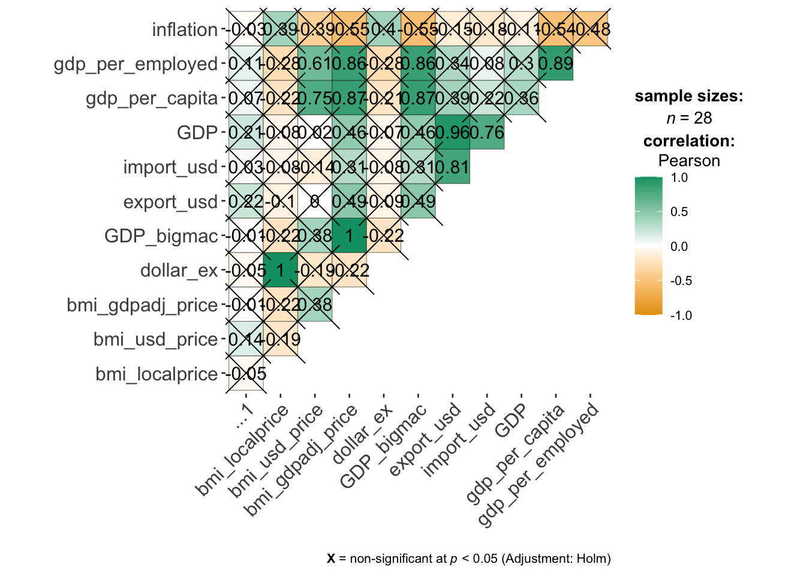
to filter on specific countries, look at singapore only
Code
filtered_data <- bmi %>%
filter(country == 'Singapore')Code
ggstatsplot::ggcorrmat(
data = filtered_data,
cor.vars = 1:11)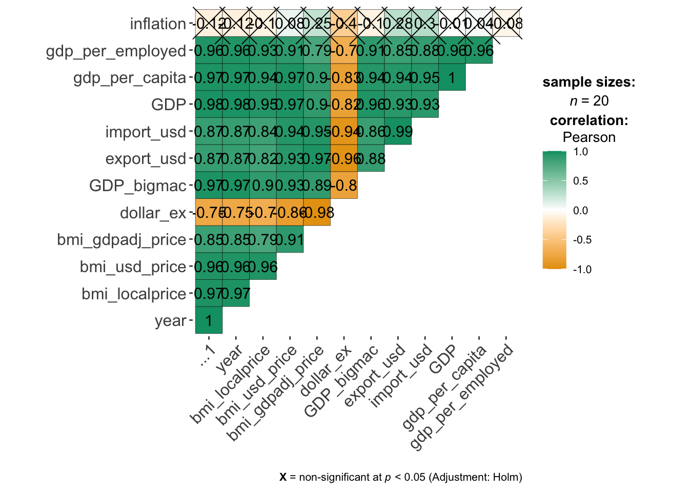
look at china
Code
filtered_data <- bmi %>%
filter(country == 'China')Code
ggstatsplot::ggcorrmat(
data = filtered_data,
cor.vars = 1:11)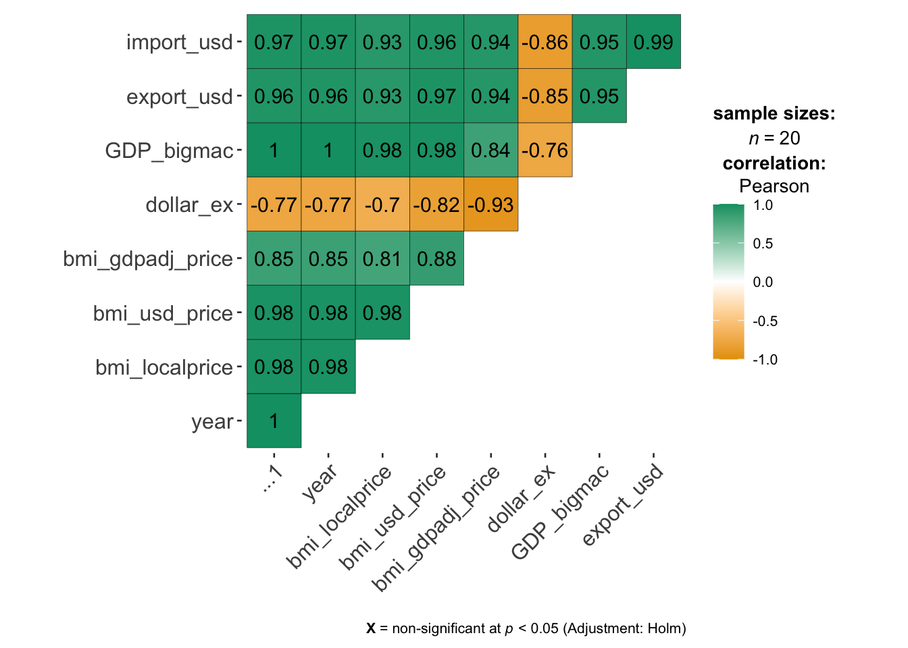
look at Russia
Code
filtered_data <- bmi %>%
filter(country == 'Russia')Code
ggstatsplot::ggcorrmat(
data = filtered_data,
cor.vars = 1:11)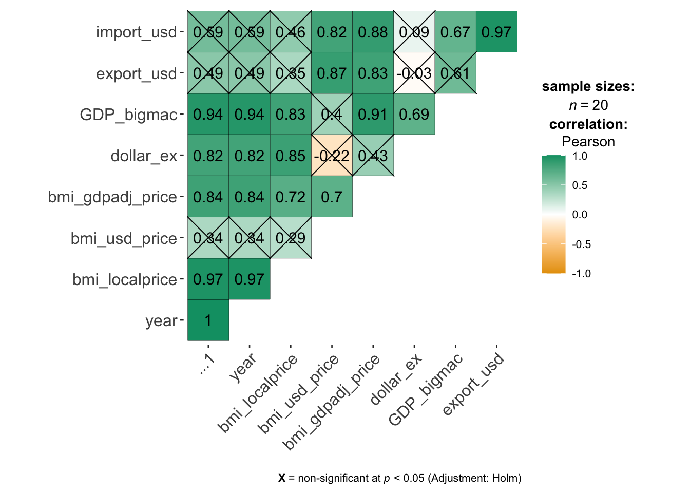
To compare 2 countries stat: for example, China, and Russia
Code
filtered_data <- bmi %>%
filter(country %in% c('Russia', 'Singapore'))Code
grouped_ggcorrmat(
data = filtered_data,
cor.vars = 1:11,
grouping.var = country,
ggcorrplot.args = list(outline.color = "black",
hc.order = TRUE,
tl.cex = 15)
)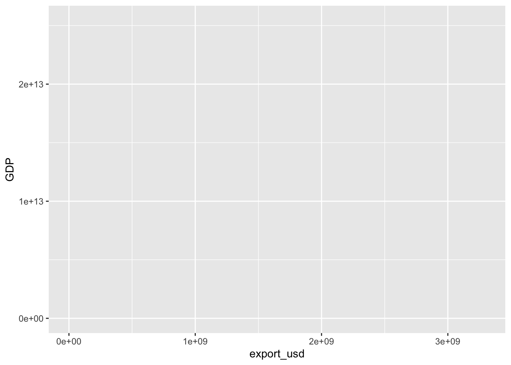
or compare between 2 years
Code
filtered_data <- bmi %>%
filter(year %in% c(2000, 2015))Code
grouped_ggcorrmat(
data = filtered_data,
cor.vars = 1:11,
grouping.var = year,
ggcorrplot.args = list(outline.color = "black",
tl.cex = 15)
)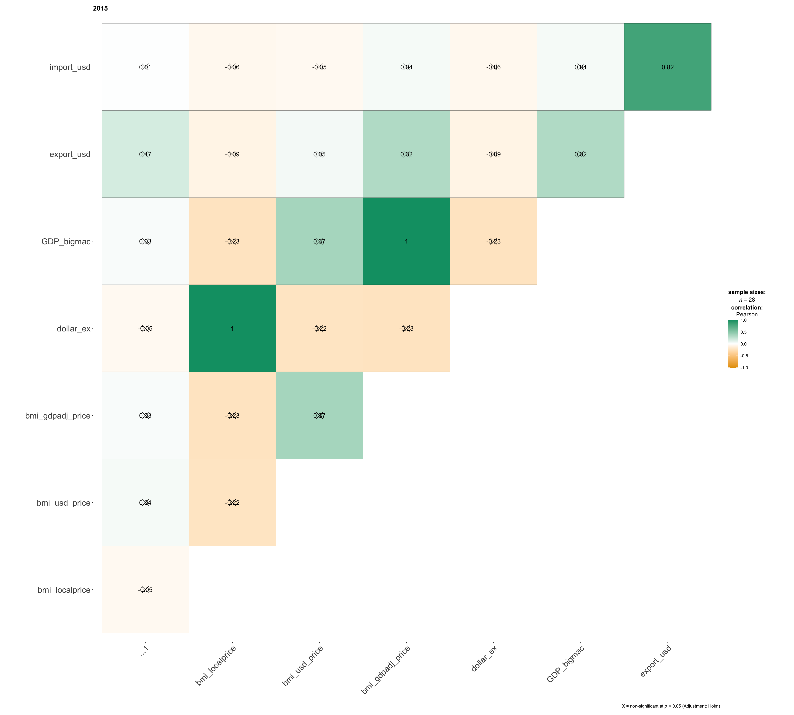
After have a quick EDA on the correlations, it makes more sense to zoom into 2 variables to understand the correlation in greater details
for example to understand GDP & export_USD
zoom in
Detailed Correlation Analysis
For pairs of variables with higher correlation, you can first visualize their relationship more closely using scatter plots and then perform statistical tests to evaluate the significance of these correlations.
Example: Zooming into Correlation between Two Variables
Let’s say you found a high correlation between bmi_usd_price and gdp_per_capita in your heatmap. Here’s how you can further analyze this relationship:
Code
# Scatter plot with linear regression line
library(ggplot2)
ggplot(bmi, aes(x = gdp_per_capita, y = bmi_usd_price)) +
geom_point() +
geom_smooth(method = "lm", col = "red") +
labs(x = "GDP per Capita", y = "BMI USD Price", title = "Scatter Plot of GDP per Capita vs. BMI USD Price")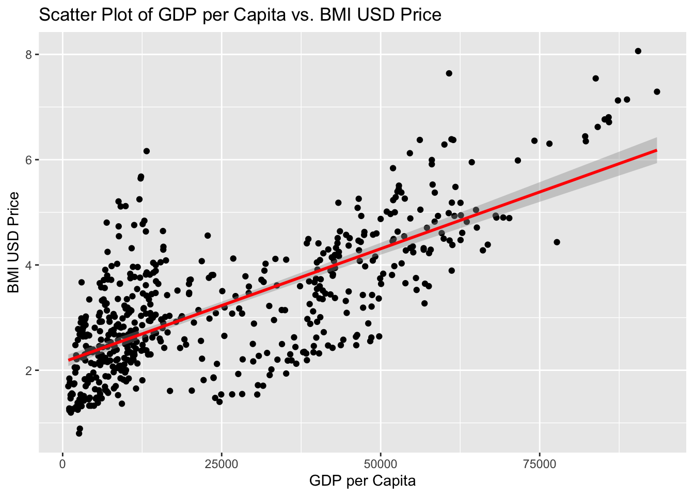
Yes, you can use the ggstatsplot package to both visualize and perform significance testing on your data. The ggstatsplot package is designed to create graphics with details from statistical tests included automatically, making it a powerful tool for exploratory data analysis and for presenting statistical findings.
To illustrate this with an example, let’s say you want to visualize the relationship between gdp_per_capita and bmi_usd_price, including a significance test for their correlation. You could use the ggscatterstats function from the ggstatsplot package:
https://r4va.netlify.app/chap10
Code
ggscatterstats(
data = bmi,
x = gdp_per_capita,
y = bmi_usd_price,
marginal = FALSE,
)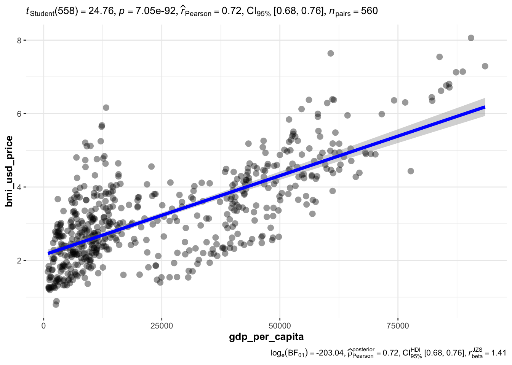
arguments
significant test
x & y
Significance Testing for Correlation
To statistically test the significance of the correlation between these two variables, you can use the cor.test() function in R, which not only gives the correlation coefficient but also provides a p-value indicating whether the observed correlation is statistically significant.
Example: Testing Significance of Correlation
Code
# Significance test for correlation between GDP per Capita and BMI USD Price
cor.test_result <- cor.test(bmi$gdp_per_capita, bmi$bmi_usd_price, method = "pearson")
print(cor.test_result)
Pearson's product-moment correlation
data: bmi$gdp_per_capita and bmi$bmi_usd_price
t = 24.76, df = 558, p-value < 2.2e-16
alternative hypothesis: true correlation is not equal to 0
95 percent confidence interval:
0.6815325 0.7607794
sample estimates:
cor
0.7235314 This test will give you the Pearson correlation coefficient and a p-value. If the p-value is less than your significance level (commonly 0.05), you can reject the null hypothesis that there is no linear correlation between the two variables, concluding that a significant linear relationship exists.
Going Beyond: Partial Correlation
If you have variables that are highly correlated and you want to account for the effect of other variables, consider conducting a partial correlation analysis. This analysis helps to understand the relationship between two variables while controlling for the effect of one or more other variables.
R Packages for Advanced Correlation Analysis
For more complex analyses, such as partial correlation or for dealing with non-linear relationships, you might explore additional R packages like ppcor for partial correlation or ggpubr for enhanced plotting options.
Example: Partial Correlation
Code
# Install and load the ppcor package for partial correlation
# install.packages("ppcor")
library(ppcor)
# Example: Partial correlation between bmi_usd_price and gdp_per_capita controlling for inflation
pcor.test(bmi$bmi_usd_price, bmi$gdp_per_capita, bmi$inflation, method = "pearson") estimate p.value statistic n gp Method
1 0.7119649 1.443686e-87 23.92853 560 1 pearsonAdjust the variables in the partial correlation example as needed to fit your specific analysis requirements. This approach will allow you to delve deeper into the relationships between variables, taking into account the influence of other factors.
Comparative Analysis Across Countries
Cross-Sectional Analysis: Compare different indices such as
bmi_localprice,bmi_usd_price, andgdp_per_capitaacross countries for a specific year. This can highlight disparities or similarities across economies.Benchmarking Analysis: Identify benchmark countries (e.g., those with the best health indices or economic performance) and compare how other countries stack up against these benchmarks in various metrics.
Code
ggplot(subset(bmi, year == "2015"), aes(x = country, y = bmi_usd_price)) +
geom_bar(stat = "identity") +
theme(axis.text.x = element_text(angle = 90, hjust = 1)) +
labs(title = "BMI Price Comparison by Country for 2015", y = "BMI USD Price", x = "Country")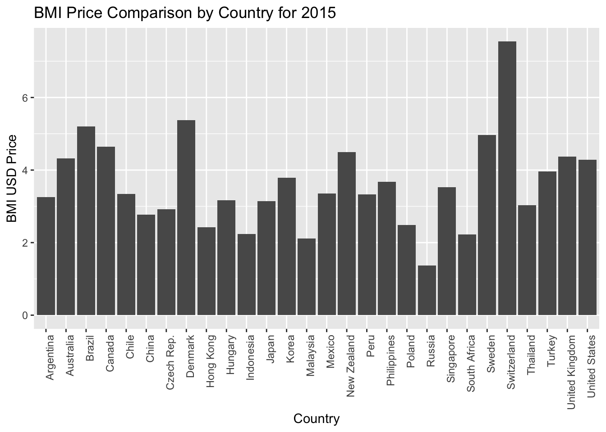
Code
# Assuming the benchmark is set by the top 5 GDP per capita countries
benchmark_countries <- bmi[order(-bmi$gdp_per_capita),][1:5,]
# Assuming you want to compare bmi_usd_price
ggplot(bmi, aes(x = country, y = bmi_usd_price, fill = country %in% benchmark_countries$country)) +
geom_bar(stat = "identity") +
theme(axis.text.x = element_text(angle = 90, hjust = 1)) +
labs(title = "BMI USD Price Comparison with Benchmark Countries", y = "BMI USD Price", x = "Country")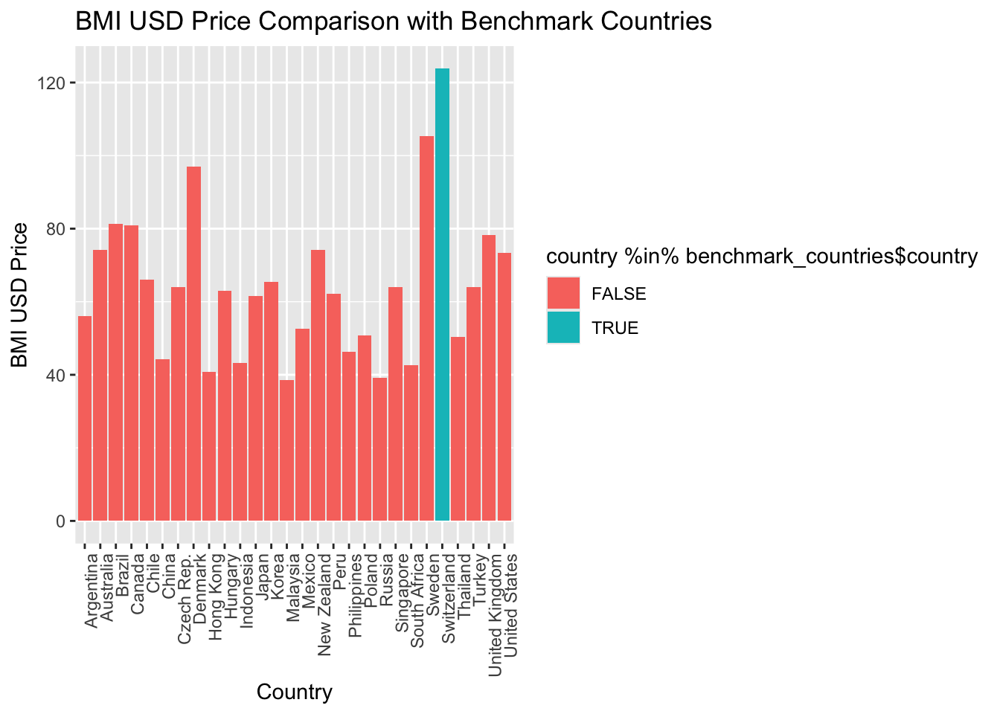
Distribution Analysis
Investigate the distribution of key variables like bmi_usd_price, GDP, and inflation across different countries. This involves using histograms, box plots, or density plots to understand the spread and skewness of the data.
Code
# Histogram for GDP
ggplot(bmi, aes(x = GDP)) +
geom_histogram(binwidth = 5000, fill = "blue", color = "black") +
labs(title = "GDP Distribution Across Countries", x = "GDP", y = "Frequency")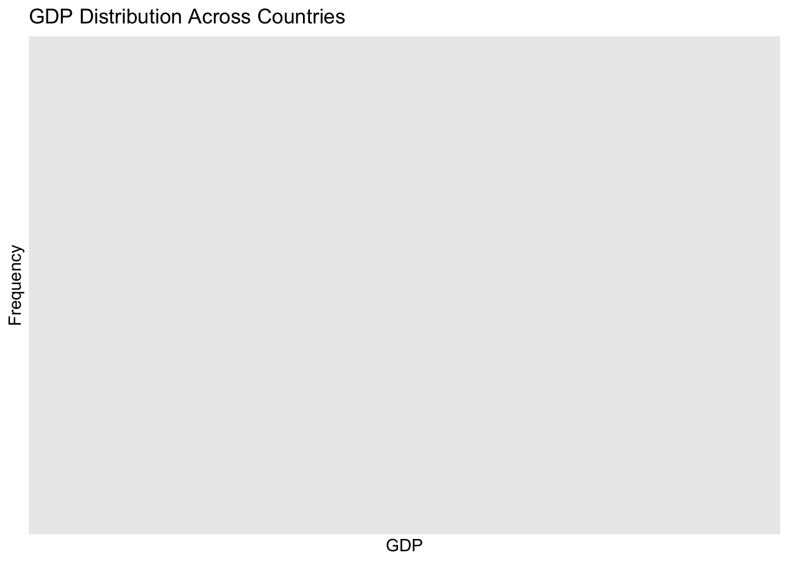
Code
# Boxplot for bmi_usd_price
ggplot(bmi, aes(y = bmi_usd_price)) +
geom_boxplot(fill = "lightblue") +
labs(title = "BMI USD Price Distribution Across Countries", y = "BMI USD Price")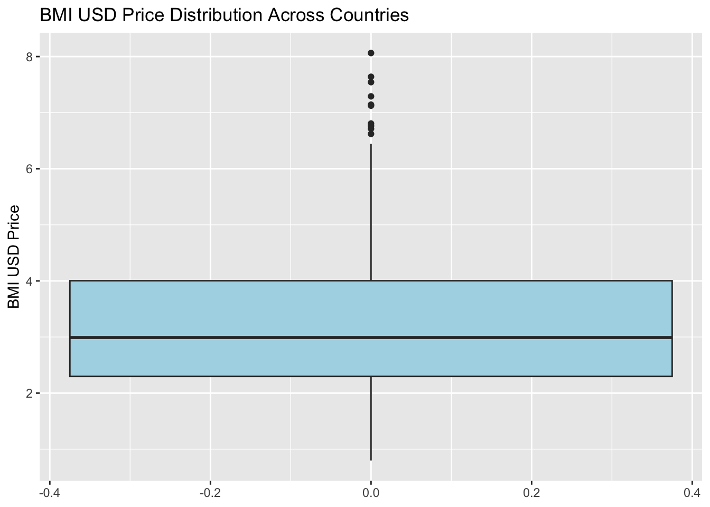
Outlier Detection
Identify any outliers in your dataset for variables of interest. Outliers can distort statistical analysis and may indicate data entry errors, or genuinely interesting observations that merit further investigation.
Code
ggplot(bmi, aes(y = bmi_usd_price)) +
geom_boxplot() +
labs(title = "Outliers in BMI USD Price")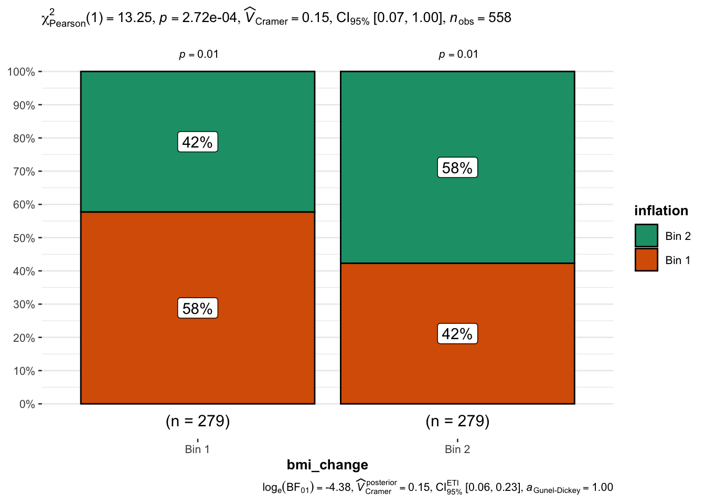
8. Hypothesis Testing
Based on your exploratory analysis, you might have some hypotheses about your data. For example, you might hypothesize that countries with higher GDP per capita have higher bmi_usd_price. You can test such hypotheses using t-tests, ANOVA, or non-parametric tests depending on your data distribution and the nature of your variables.
Code
# Splitting data based on GDP per capita median
high_gdp_per_capita <- subset(bmi, gdp_per_capita > median(bmi$gdp_per_capita))
low_gdp_per_capita <- subset(bmi, gdp_per_capita <= median(bmi$gdp_per_capita))
# Conducting t-test
t_test_result <- t.test(high_gdp_per_capita$bmi_usd_price, low_gdp_per_capita$bmi_usd_price)
print(t_test_result)
Welch Two Sample t-test
data: high_gdp_per_capita$bmi_usd_price and low_gdp_per_capita$bmi_usd_price
t = 13.427, df = 505.29, p-value < 2.2e-16
alternative hypothesis: true difference in means is not equal to 0
95 percent confidence interval:
1.079466 1.449501
sample estimates:
mean of x mean of y
3.852085 2.587601 Time Series Clustering
time series clustering is a technique xxxx
https://cran.r-project.org/web/packages/dtwclust/vignettes/dtwclust.pdf
https://harpomaxx.github.io/post/clustering-approaches-time-series/
https://www.rdatamining.com/examples/time-series-clustering-and-classification
package
dtwclust package is used
Code
pacman::p_load(dtwclust, dplyr, tidyr, ggplot2)Model Calibration
Prepare Data for Clustering
filter column for analysis
Code
df_selected <- bmi[c("bmi_usd_price", "year","country")]First, reshape the data to a wide format where each row represents a country and each column represents a year with its corresponding Big Mac Index price in USD. You’ve already started this step, so let’s continue from there, ensuring each time series is properly formatted for clustering.
Code
df_selected_wide <- df_selected %>%
pivot_wider(names_from = year, values_from = `bmi_usd_price`)
# Keep country names for later use
country_names <- df_selected_wide$country
# Prepare the data for clustering, removing non-numeric columns
# Explicitly reference the dplyr package to avoid potential conflicts
df_for_clustering <- df_selected_wide %>% dplyr::select(-country)Convert Data to Time Series Objects
Convert each row into a time series object. This is essential because the clustering algorithm requires time series data to measure similarities.
Code
# Convert each row to a time series object
time_series_list <- lapply(1:nrow(df_for_clustering), function(i) {
ts_data <- unlist(df_for_clustering[i, ])
ts(ts_data)
})Perform Time Series Clustering
Now, you’re ready to cluster the time series data. You can adjust the number of clusters (k) and other parameters based on your specific needs.
Code
# Set seed for reproducibility
set.seed(123)
# Clustering using DTW (Dynamic Time Warping)
clustering_result <- tsclust(time_series_list, type = "partitional", k = 4, distance = "dtw")
# Extract cluster assignments
cluster_assignments <- sapply(clustering_result@cluster, function(x) x)Map Clusters Back to Countries
After obtaining the cluster assignments, map these back to the countries to identify which countries have been grouped together.
Code
# Combine cluster assignments with country names
clustered_countries <- data.frame(country = country_names, cluster = cluster_assignments)
# View the cluster assignments
print(clustered_countries) country cluster
1 Argentina 4
2 Australia 2
3 Brazil 2
4 United Kingdom 2
5 Canada 2
6 Chile 2
7 China 1
8 Czech Rep. 4
9 Denmark 2
10 Hong Kong 1
11 Hungary 4
12 Indonesia 1
13 Japan 4
14 Malaysia 1
15 Mexico 4
16 New Zealand 2
17 Peru 4
18 Philippines 1
19 Poland 1
20 Russia 1
21 Singapore 2
22 South Africa 1
23 Korea 4
24 Sweden 3
25 Switzerland 3
26 Thailand 2
27 Turkey 4
28 United States 2adjustable parameters:
input:
target variables for clustering
timeframe for analysis
model calibration:
type of clustering method to use:
"partitional","hierarchical","tadpole"or"fuzzy"k: Number of desired clusters. It can be a numeric vector with different values
https://rdrr.io/cran/dtwclust/man/tsclust.html
https://www.rdocumentation.org/packages/dtwclust/versions/5.5.12
https://cran.r-project.org/web/packages/dtwclust/dtwclust.pdf
Visualization of model
To better understand and visualize the clustering results, consider plotting the Big Mac Index prices in USD for each country, colored by their cluster assignment. This step can provide insights into the similarities within each cluster.
Code
# Merge the cluster assignments back with the original data
df_clustered <- merge(df_selected, clustered_countries, by = "country")
# Plot
ggplot(df_clustered, aes(x = year, y = bmi_usd_price, group = country, color = factor(cluster))) +
geom_line() +
theme_minimal() +
labs(title = "Time Series Clustering of Big Mac Index Prices by Country",
color = "Cluster")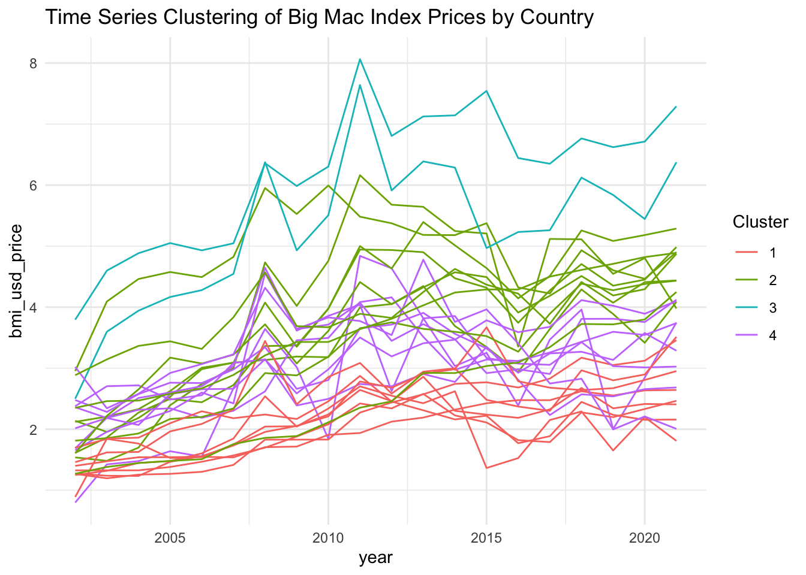
geo spatial analysis to visualize the location of such countries by cluster on the world map directly, to understand its geospatial location, if there is any pattern
to find out more about geo-spatial portion, please refer to our team mate’s work xxxx